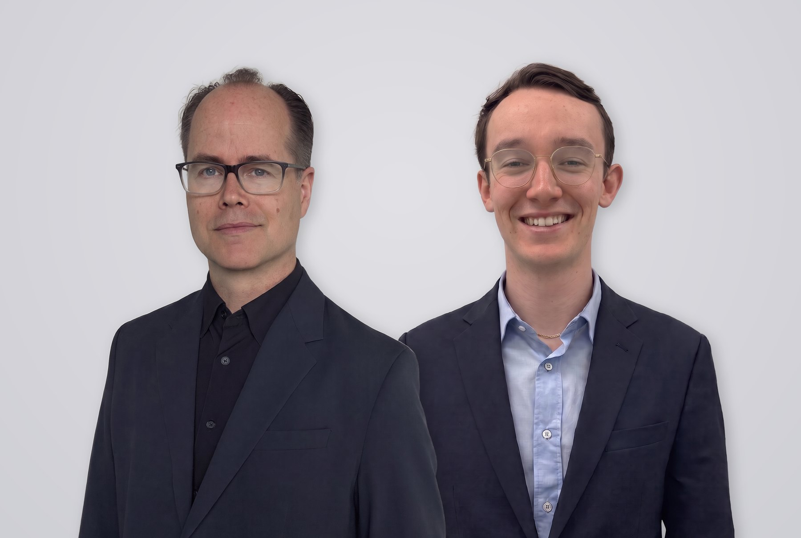

Zwei Menschen, eine Haltung.
Finanzbildung ohne Produktverkauf. Du lernst, wie Geld funktioniert, und entscheidest selbst. Scroll weiter, wir stellen uns vor.
↓ Weiterscrollen„Ob in der Schule, beim Sport oder in der Universität. Wir alle haben uns am Durchschnitt orientiert. Ein fataler Irrtum, aber erst nach Jahrzehnten spürbar. Beim Investieren ist das anders: Durchschnitt und Halbwissen bedeuten hier sofortige Abhängigkeit.“René Flé
Anlageberatung zementiert Abhängigkeit. Finanzbildung schafft Mündigkeit.
Anlageberatung überlassen wir den erfahrenen Anbietern. Rendite ist und bleibt das Ergebnis von Methode und Können, vor allem aber von Selbstdisziplin und Wiederholung. Genau das trainieren wir: in der richtigen Reihenfolge, in kleinen Gruppen, von Mensch zu Mensch.
Die beiden hinter R&F.
René Flé
Gründer · Inhalte und ProgrammeHey, ich bin René.
Ich kenne das System von innen. Deshalb musste ich etwas verändern.
Ich bin Wirtschaftswissenschaftler, mit über 25.000 Lehreinheiten als Dozent und als Ausbilder von Wirtschaftsprüfern und Steuerberatern.
Zwischen 1999 und 2020 habe ich mit „BWLKurse“ an der Goethe-Universität eines der größten Repetitorien im DACH-Raum aufgebaut.
Simon Schlerf
Mitgründer · Apps und LernräumeUnd ich bin Simon.
Ich baue die Räume, in denen Lernen leicht wird.
Die Firestarter-App, diese Website und der Geldbaum für Kinder sind meine Arbeit.
Wie aus über 20 Jahren Lehre R&F wurde.
Die Geschichte von R&F ist vor allem Renés Geschichte: Er hat tausende Menschen durch schwere Prüfungen geführt und dabei gesehen, wo Verstehen verloren geht.
- Die 90er
Erst der Taschenrechner.
Erlaubt erst ab der siebten Klasse, in Prüfungen beschränkt, nie mit programmierten Formeln. Die Aufgaben waren so gebaut, dass man es sehen musste: Verstehst du es oder drückst du nur Tasten?
- 1999
René startet „BWLKurse“ an der Goethe-Universität.
Bis 2020 baut er daraus eines der größten Repetitorien im DACH-Raum auf.
- Über die Jahre
Dozent, Ausbilder, Forscher.
René ist Wirtschaftswissenschaftler. Er bildet Wirtschaftsprüfer und Steuerberater aus, arbeitet in der Forschung und als Honorardozent an zwei der größten deutschen Privat-Universitäten. In verschiedenen Rollen führt er tausende Wirtschaftsstudenten durch ihre anspruchsvollen Prüfungen.
25.000+Lehreinheiten als DozentTausendeWirtschaftsstudenten durch ihre Prüfungen geführt20+Jahre Repetitorium an der Goethe-Universität, 1999 bis 2020 - 15 Jahre später
Tastenkombinationen statt Verstehen.
René wird ständig nach Tastenkombinationen gefragt, die man zu bestimmten Stichwörtern auswendig lernen kann.
- Heute
Dasselbe Muster mit der KI. Nur schneller.
Menschen fragen Maschinen, ohne zu wissen, worüber sie eigentlich fragen. Keine KI prüft, ob eine Antwort wahr oder plausibel ist. Besonders bei Finanzen solltest du dir das Wissen selbst aneignen. Deshalb gibt es heute R&F.
- Jetzt
Inhalte von René, Räume von Simon.
René entwickelt die Inhalte und Programme. Simon baut die Firestarter-App, diese Website und den Geldbaum für Kinder.
„René ging weit über den Lehrplan hinaus. Er hat mir nicht nur Fachwissen vermittelt, sondern beigebracht, Chancen zu erkennen und Märkte bewusster zu verstehen. Für mich war er nicht nur ein sehr lehrreicher Professor, sondern ein echter Mentor, der meine fachliche und persönliche Entwicklung nachhaltig geprägt hat.“
Schreib uns.
Eine Frage zu einem Programm, zur App oder zum Kindertag? Wir antworten persönlich.
WINX-Tower, Frankfurt am Main
Neue Mainzer Straße 6–10 · 60311 Frankfurt am Main
WINX-Tower, Frankfurt am Main.
Neue Mainzer Straße 6–10 · 60311 Frankfurt am Main
Im MainTor-Quartier direkt am Mainufer. Sieh dir auf der Karte an, wo wir sind und wie weit du es hast.
Beim Laden überträgt dein Browser Daten an Google. Mehr dazu in der Datenschutzerklärung.